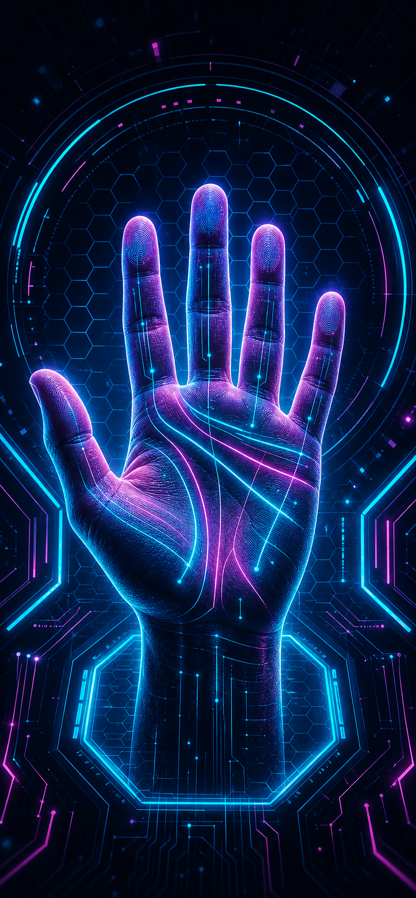

직관과 분석이 함께 움직이는 균형형 타입입니다.
Entertainment Palm ReadingPalmistry AI
0%
CYBERPALM
SCANNING...
PALM ANALYSIS
LIFE 86%HEAD 74%HEART 92%

CYBERPALM | AI PALM SCAN
Life Line: 88%Head Line: 74%Heart Line: 92%
촬영 가이드브라우저 분석
왼손 촬영 준비
손바닥 전체가 화면 중앙에 들어오고 손금이 잘 보이도록 밝은 곳에서 촬영해 주세요.
왼손대기품질 대기
오른손대기품질 대기
왼손부터 촬영하거나 갤러리에서 선택해 주세요.
CYBERPALM SCAN0%
CYBERPALM
이미지 전처리 중
- Image Input
- Preprocessing
- Line Detection
- Interpretation
분석 결과--
CYBERPALM | AI PALM SCAN
양손 이미지 분석 완료
Life Line----
Head Line----
Heart Line----
Fate Line----
이미지 품질--
분석 방식브라우저 분석
분석 기준 확인 중
양손 사진의 밝기, 선명도, 손금 후보선을 함께 확인합니다.
왼손타고난 성향
직관과 판단의 균형을 참고합니다.
오른손현재 패턴
최근의 실행력과 관계 흐름을 참고합니다.
감정 표현은 깊지만 관계에서는 신중하게 움직입니다.
빠른 결정보다는 검토 후 실행하는 사고 흐름입니다.
가까운 관계에 몰입하고 신뢰를 중시합니다.
양손의 주요 흐름을 바탕으로 현재 성향과 리듬을 요약합니다.
최근 선택과 실행 흐름을 참고해 해석합니다.
감정 표현과 관계 패턴을 함께 해석합니다.
결과를 자기성찰 힌트로 가볍게 활용해 주세요.
결과는 엔터테인먼트 및 자기성찰 목적의 참고 리포트입니다.
Perspicacious Analysis--
CYBERPALM | PRIVATE INSIGHT
심층 성향 리포트
상대에게 기대하는 정서적 안정감과 끌림의 방향을 해석합니다.
관계가 시작되고 깊어질 때의 속도와 표현 방식을 해석합니다.
애정을 주고받는 방식과 친밀감의 리듬을 참고합니다.
친밀감, 신뢰, 거리감의 흐름을 중심으로 해석합니다.
이 내용은 성인용 엔터테인먼트 및 자기성찰 목적의 참고 리포트입니다.